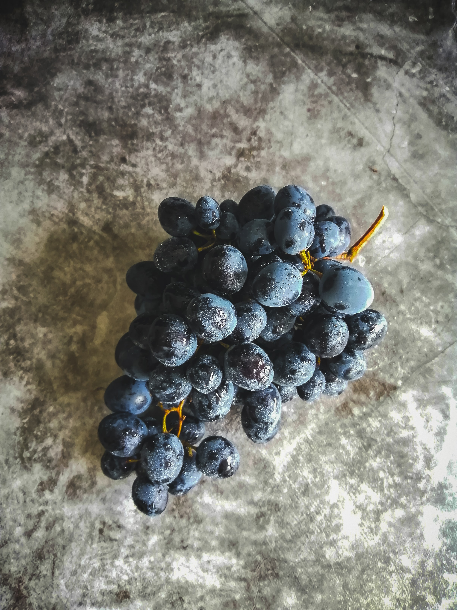
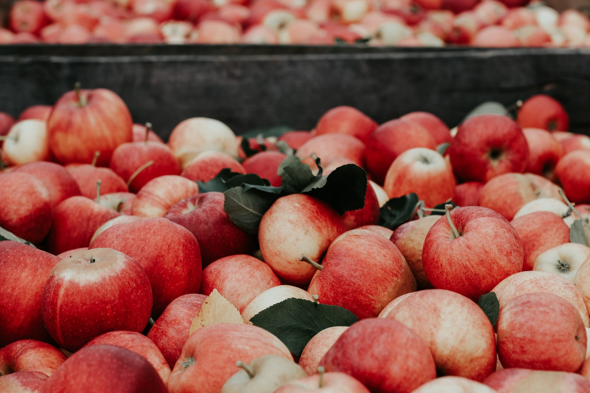
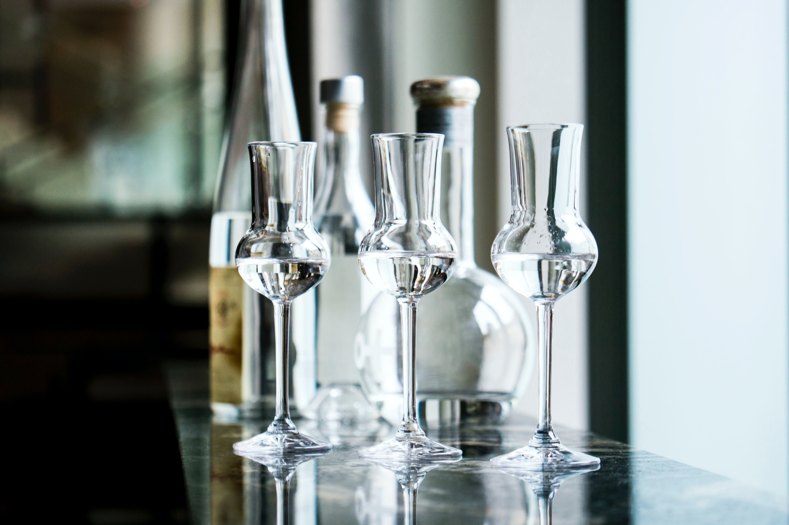

Bryg & hyg
Om os
Kontakt
Blog
Exploring brewing
Vin, øl, cider, og snaps. Alt gjort med en sanke passion og nysgerrighed
Produkter

Vinen vi brygger er oftest lavede på frugter der gror her i Danmark

Vores cider er lavet på æbler er samlet fra individuelle træer rundt omkring på Sjælland

Øl er vores sociale projekt, hvor vi inviterere gæster til at være med til at brygge

Det starter med snapsen. Vores historie starter med en række snaps vi begyndte at lave fra planter vi sankede
Somehow, despite all the science homebrewing requires, I'd become irrationally superstitious.
Følg med i vores udvikling!
Gå til vores blog for at følge med i vores igangværende projekter